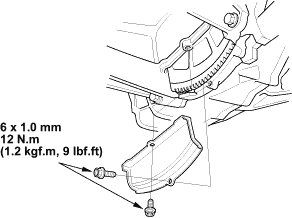
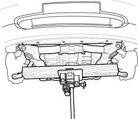
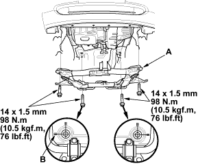
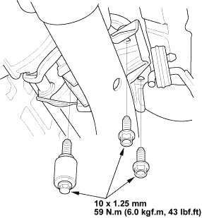

- Install the clutch cover.

- Support the sub-frame with a 4 x 4 x 40 in. piece of wood and a jack.


- Install the front suspension sub-frame (A) in its original position by aligning the marks (B) you made in the removal procedure.

- Install the three rear mounting bolts for the transmission rear mount.
